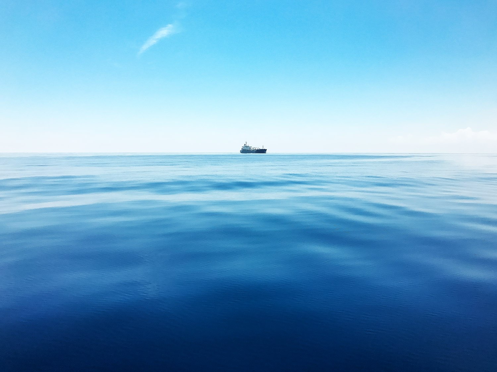
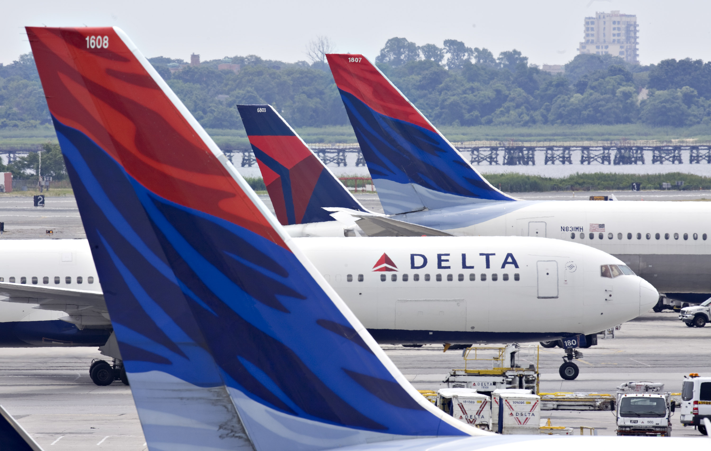
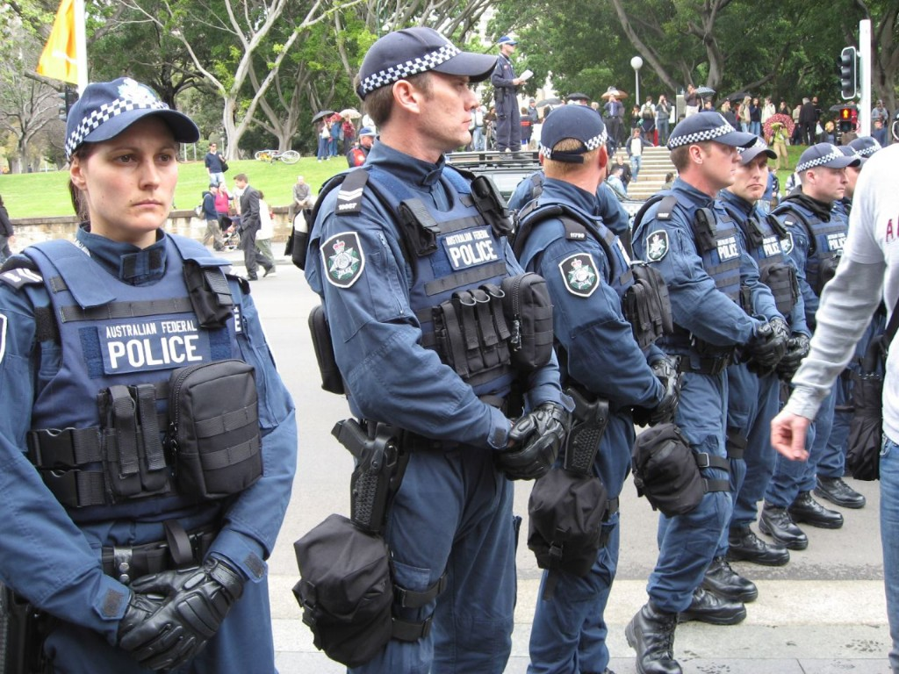

Psychology of Blue
How does the color blue make you feel? People have long believed that certain colors can evoke different moods and feelings, and some research has supported the idea that colors can have psychological effects. Blue is a color often found in nature such as the pale blue of a daytime sky or the rich dark blue of a deep pool of water. It is for this reason perhaps that people often describe the color blue as calm and serene.

Blue is the colour of the mind and is essentially soothing; it affects us mentally, rather than the physical reaction we have to red. Strong blues will stimulate clear thought and lighter, soft blues will calm the mind and aid concentration. Consequently it is serene and mentally calming. It is the colour of clear communication. Blue objects do not appear to be as close to us as red ones. Time and again in research, blue is the world's favourite colour. However, it can be perceived as cold, unemotional and unfriendly.
Air Planes

Many people have a fear of flying. This form of travel is often associated with sickness, discomfort, and chaos. To help combat these negative feelings towards flight, many airlines, such as Continental, AirTran, and JetBlue have incorporated the color blue into their brand identity, designed to suggest security, stability, cleanliness, safety, and peace. JetBlue even includes the color in its name. Furthermore, the interior of many airports and aircrafts incorporate lots of blue. Blue is also a connection to clear skies. It clearly invades our minds and attitudes in connection to the air travel industry. The question remains, however, is the use of blue effective in this regard?
Inteligence
As a dependable and constant color, blue is also associated with precision and intellect, making it a common color choice for many technology companies. HP, Phillips, and Samsung all use blue in their corporate brand. Just think, if they were to use red instead, that sense of precision and intellect would be overcome by a sense of urgency. We’ll discuss red later.
The list goes on and on of corporations that use the color blue. General Electric, Ford, Walmart, The Weather Channel, Gap, American Express, AT&T. What do you think these companies were trying to communicate in the development of their corporate identity? Most likely they found blue to be the best look for their company to communicate ideals of trust, reliability, productivity, and intellect.
Justice

One last association to touch on that blue commonly has is an association with justice, loyalty, and perseverance, especially when red is included. Many national flags use this color scheme for this reason. Law enforcement is typically seen wearing blue. The United States Air Force brand is a dignified example of an identity that utilizes blue as its hallmark color